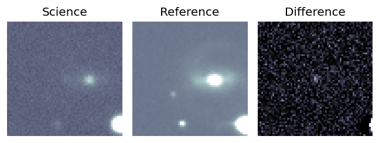
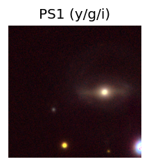
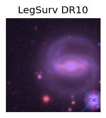
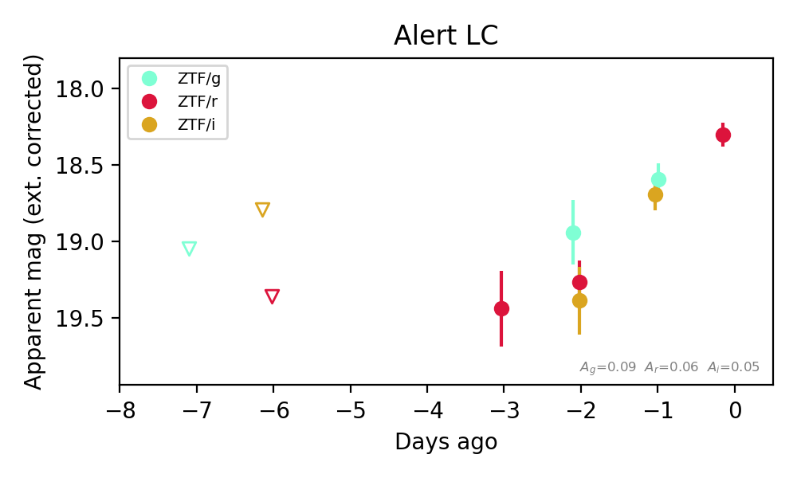
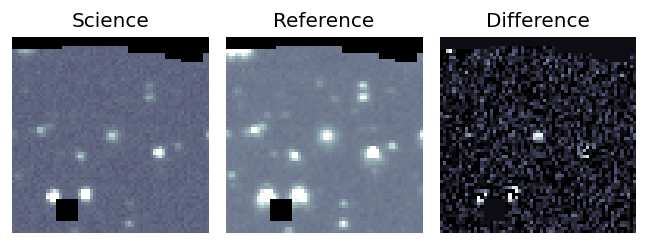
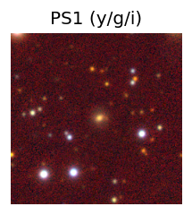
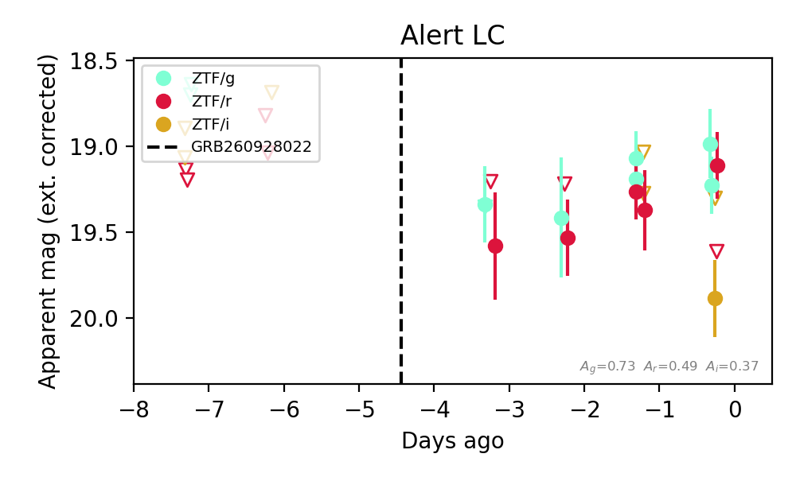
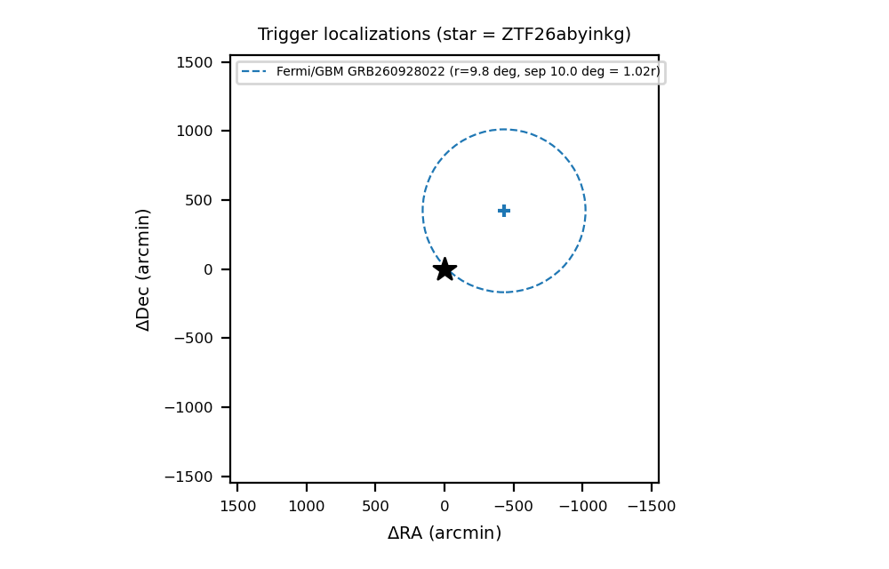

Candidate List 20261002Last night — ZTF: 2,765 passed basic cuts (45 young) · LSST: 0 passed basic cuts (0 young)Previous Day Next Day
Section 1: New Sources (age<1d) Section 2: Old (1-5d) sources observed last nightplaceholder
Section 1: New Afterglow/FBOT Cands Last Night (0)
Section 2: Older Sources Observed Last Night (10)
0. [ZTF] ZTF26abxkuhv (Afterglow?) [Back to Top] [Share] [Trigger Swift] [Fritz Alert] [Fritz Source] [Lasair]RA, Dec: 315.62611, -19.46162 21h 2m30.27s, -19d-27m-41.85sGalactic (l, b): 28.32868, -37.30659 WARNING: -2.49 deg from ecliptic plane ext(g-r) = 0.056


TESS: Sectors [ 92 116]
PS1: 0 sources in 3 arcsec
LegacySurvey: 0 sources in 3 arcsec

Extinction-corrected gr color:
From alerts: 0.15 +/- 0.03 mag
Extinction-corrected gi color:
From alerts: -0.06 +/- 0.03 mag
Extinction-corrected ri color:
From alerts: -0.15 +/- 0.03 mag
Consistent with synchrotron, g-r>0!
Rise Rate:
g: 0.03 mag/day
r: 0.05 mag/day
i: 0.64 mag/day
Fade Rate:
1. [ZTF] ZTF26abxpksn (Afterglow?) [Back to Top] [Share] [Trigger Swift] [Fritz Alert] [Fritz Source] [Lasair]RA, Dec: 280.15605, 7.98837 18h40m37.45s, 7d59m18.14sGalactic (l, b): 38.8412, 6.02366 ext(g-r) = 0.556


TESS: Sectors [ 80 118]
PS1: 0 sources in 3 arcsec
LegacySurvey: 0 sources in 3 arcsec


Extinction-corrected gr color:
From alerts: -1.38 +/- 99 mag
Extinction-corrected gi color:
From alerts: -0.71 +/- 99 mag
Rise Rate:
g: 1.11 mag/day
r: 1.46 mag/day
Fade Rate:
g: 0.13 mag/day
r: 0.67 mag/day
2. [ZTF] ZTF26abxwicv (FBOT?) [Back to Top] [Share] [Trigger Swift] [Fritz Alert] [Fritz Source] [Lasair]RA, Dec: 243.05314, 11.15845 16h12m12.75s, 11d 9m30.43sGalactic (l, b): 24.31841, 40.33368 ext(g-r) = 0.063


TESS: Sectors [ 51 117]
NED host (10 arcsec):Found WISEA J161213.27+110928.3 (G, 8.0″); NED spec-z: z=0.0424 [zflag SLS]; peak abs mag = -18.64
PS1: 0 sources in 3 arcsec
LegacySurvey: 1 sources in 3 arcsec Closest: d = 3.47 arcsec, 258.9 deg (east of north) photoz=0.24 (68% bounds 0.05, 0.75), type=PSF peak abs mag (ext. corrected) = -22.67 (68% bounds -18.93, -25.59)

Rise Rate:
r: 0.23 mag/day
Fade Rate:
3. [ZTF] ZTF26abydudp (FBOT?) [Back to Top] [Share] [Trigger Swift] [Fritz Alert] [Fritz Source] [Lasair]RA, Dec: 359.61902, 13.51659 23h58m28.56s, 13d30m59.73sGalactic (l, b): 103.73447, -47.37137 ext(g-r) = 0.057


TESS: Sectors [42 83]
SDSS (<15 kpc):Found SDSS phot-z: z=0.55; peak abs mag = -23.47
NED host (10 arcsec):Found WISEA J235829.02+133101.5 (G, 7.0″); NED spec-z: z=0.0281 [zflag SUN]; peak abs mag = -16.43
PS1: 0 sources in 3 arcsec
LegacySurvey: 1 sources in 3 arcsec Closest: d = 3.96 arcsec, 137.4 deg (east of north) photoz=0.22 (68% bounds 0.04, 0.67), type=EXP peak abs mag (ext. corrected) = -21.21 (68% bounds -17.25, -24.02)

Extinction-corrected gr color:
From alerts: -0.14 +/- 0.18 mag
Extinction-corrected gi color:
From alerts: -0.28 +/- 0.2 mag
Extinction-corrected ri color:
From alerts: -0.14 +/- 0.18 mag
Consistent with synchrotron, g-r>0!
Rise Rate:
g: 0.21 mag/day
r: 0.14 mag/day
i: 0.09 mag/day
Fade Rate:
4. [ZTF] ZTF26abyetel (Afterglow?) [Back to Top] [Share] [Trigger Swift] [Fritz Alert] [Fritz Source] [Lasair]RA, Dec: 39.3829, -20.33773 2h37m31.90s, -20d-20m-15.82sGalactic (l, b): 203.01056, -64.84415 ext(g-r) = 0.029


TESS: Sectors [ 4 31 97 107 108]
PS1: 0 sources in 3 arcsec
LegacySurvey: 1 sources in 3 arcsec Closest: d = 8.84 arcsec, 340.1 deg (east of north) photoz=0.47 (68% bounds 0.28, 0.7), type=EXP peak abs mag (ext. corrected) = -23.89 (68% bounds -22.53, -24.92)

Extinction-corrected gr color:
From alerts: -0.32 +/- 0.25 mag
Extinction-corrected gi color:
From alerts: -0.1 +/- 0.15 mag
Extinction-corrected ri color:
From alerts: -0.12 +/- 0.26 mag
Consistent with synchrotron, g-r>0!
Rise Rate:
g: 0.14 mag/day
r: 0.46 mag/day
i: 0.71 mag/day
Fade Rate:
5. [ZTF] ZTF26abyinkg (Afterglow?) [Back to Top] [Share] [Trigger Swift] [Fritz Alert] [Fritz Source] [Lasair]RA, Dec: 297.72546, 1.07512 19h50m54.11s, 1d 4m30.43sGalactic (l, b): 40.80702, -12.69367 ext(g-r) = 0.233Coincident trigger: Fermi/GBM GRB260928022 (r=9.8 deg, sep 10.0 deg = 1.02 r; 1.11 d before first detection)Trigger time(s) marked on the light curve; error circles in the localization panel.


TESS: Sectors [54 81]
SDSS (<15 kpc):Found SDSS phot-z: z=0.10; peak abs mag = -19.29
PS1: 1 source in 3 arcsec Closest: d = 0.77 arcsec photoz=0.10+/-0.01 peak abs mag = -19.32
LegacySurvey: 0 sources in 3 arcsec


Extinction-corrected gr color:
From alerts: 0.02 +/- 0.23 mag
Extinction-corrected gi color:
From alerts: -0.75 +/- 0.26 mag
Extinction-corrected ri color:
From alerts: -0.77 +/- 0.3 mag
Consistent with synchrotron, g-r>0!
Rise Rate:
r: 26.6 mag/day
Fade Rate:
r: 0.33 mag/day
6. [ZTF] ZTF26abyistt (Afterglow?) [Back to Top] [Share] [Trigger Swift] [Fritz Alert] [Fritz Source] [Lasair]RA, Dec: 294.21605, 8.18263 19h36m51.85s, 8d10m57.47sGalactic (l, b): 45.45473, -6.23275 ext(g-r) = 0.357Coincident trigger: Fermi/GBM GRB260928022 (r=9.8 deg, sep 3.6 deg = 0.37 r; 1.10 d before first detection)Trigger time(s) marked on the light curve; error circles in the localization panel.


TESS: Sectors [54 81]
PS1: 1 source in 3 arcsec Closest: d = 2.36 arcsec photoz=0.63+/-0.05 peak abs mag = -24.58
LegacySurvey: 0 sources in 3 arcsec


Extinction-corrected gr color:
From alerts: -0.42 +/- 99 mag
Extinction-corrected gi color:
From alerts: -0.35 +/- 99 mag
Rise Rate:
g: 1.04 mag/day
Fade Rate:
g: 0.8 mag/day
7. [ZTF] ZTF26abyityt (FBOT?) [Back to Top] [Share] [Trigger Swift] [Fritz Alert] [Fritz Source] [Lasair]RA, Dec: 308.69055, 25.32867 20h34m45.73s, 25d19m43.21sGalactic (l, b): 67.4886, -8.94186 ext(g-r) = 0.198


TESS: Sectors [ 14 15 41 55 81 82 120]
PS1: 1 source in 3 arcsec Closest: d = 0.97 arcsec photoz=0.11+/-0.02 peak abs mag = -19.61
LegacySurvey: 0 sources in 3 arcsec

Extinction-corrected gr color:
From alerts: -0.81 +/- 0.32 mag
Rise Rate:
g: 0.26 mag/day
Fade Rate:
8. [ZTF] ZTF26abymrub (FBOT?) [Back to Top] [Share] [Trigger Swift] [Fritz Alert] [Fritz Source] [Lasair]RA, Dec: 351.94754, 41.95062 23h27m47.41s, 41d57m2.22sGalactic (l, b): 106.69861, -18.26926 ext(g-r) = 0.112


TESS: Sectors [16 57 84]
PS1: 1 source in 3 arcsec Closest: d = 4.60 arcsec photoz=0.49+/-0.65 peak abs mag = -27.35
LegacySurvey: 0 sources in 3 arcsec

Extinction-corrected gr color:
From alerts: 0.28 +/- 99 mag
Rise Rate:
r: 4.93 mag/day
Fade Rate:
9. [ZTF] ZTF26abysngk (Afterglow?FBOT?) [Back to Top] [Share] [Trigger Swift] [Fritz Alert] [Fritz Source] [Lasair]RA, Dec: 20.80667, -3.13054 1h23m13.60s, -3d-7m-49.94sGalactic (l, b): 141.87099, -64.82691 ext(g-r) = 0.04


TESS: Sectors [ 3 30 42 43 70 97]
SDSS (<15 kpc):Found SDSS phot-z: z=0.13; peak abs mag = -19.57
PS1: 0 sources in 3 arcsec
LegacySurvey: 1 sources in 3 arcsec Closest: d = 0.39 arcsec, 35.5 deg (east of north) photoz=0.08 (68% bounds 0.06, 0.11), type=SER peak abs mag (ext. corrected) = -18.5 (68% bounds -17.92, -19.04)

Extinction-corrected gr color:
From alerts: -0.64 +/- 0.32 mag
Extinction-corrected gi color:
From alerts: -0.61 +/- 0.28 mag
Extinction-corrected ri color:
From alerts: 0.03 +/- 0.37 mag
Consistent with synchrotron, g-r>0!
Rise Rate:
g: 0.63 mag/day
r: 0.36 mag/day
Fade Rate: